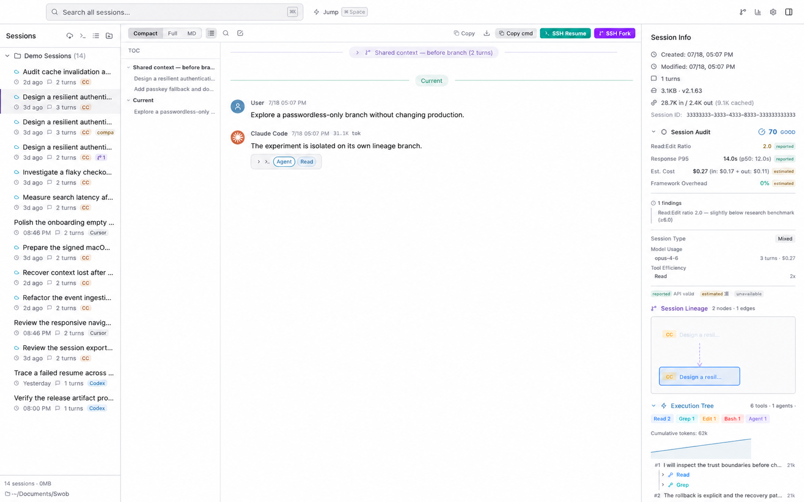
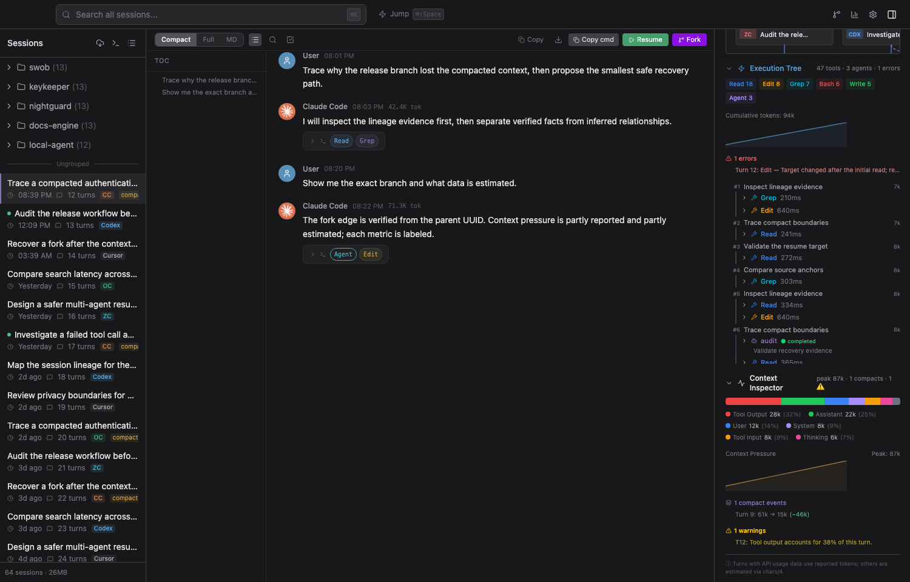
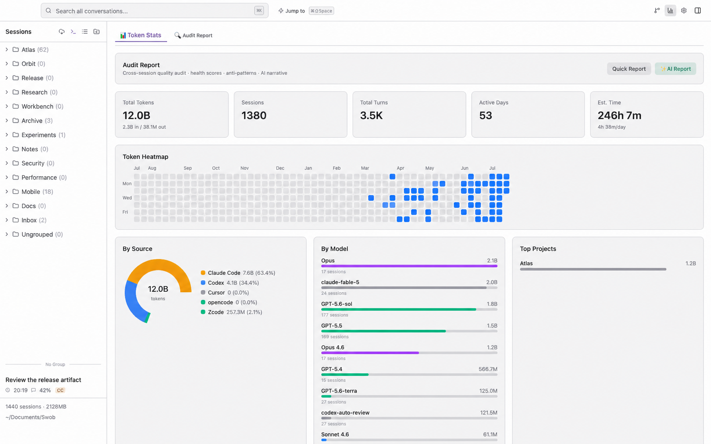

LOCAL / 01
Core evidence stays on the Mac.
Browsing, SQLite indexing, search, lineage, graph layout, execution inspection, context analysis, audit, Quick Report, and export run locally.
Trace how sessions fork, compact, and continue. Recover missing context, search histories from 11 coding harnesses, and debug the tool calls and context pressure behind every run.
Truth before launch copy: public v1.2.0 is the five-source stable build and is unsigned. The graph, debugger, 11-harness ingestion, AI Insights, and SQLite FTS shown here are implemented on current main and ship in the next release.

A resume is not always the same file. A fork is not merely another row. A compact summary is not the original conversation. Swob reconstructs those relationships instead of pretending every transcript stands alone.
Swob's Library still held local backups, so the work remained readable and could be evaluated for safe recovery. The number is an audited corpus result—not a claim that every user loses exactly 15.6%.
The graph distinguishes strong lineage evidence from softer project, source, time, working-directory, and file affinity. It helps you navigate without turning a visual grouping into a fake family relationship.
The answer is rarely “the model was bad.” Swob lets you inspect the execution path, context composition, compaction points, tool errors, latency, framework overhead, and evidence quality behind a session.


The local dashboard combines tokens, cost estimates, heatmaps, source/model/project breakdowns, tool use, and code-change counts. Quick Report stays local. AI Report is a separate, explicit network action.

Current main discovers each source below. Parsing depth, lineage evidence, tokens, and resume support depend on what the original tool records; Swob does not fabricate missing metadata.
Stable v1.2.0 publicly ships the original five-source set: Claude Code, Codex, Cursor, OpenCode, and Zcode. The additional six source families are current-main / next-release capabilities.
“Local-first” should describe architecture, not hide exceptions. Swob documents which operations stay local, which actions connect elsewhere, and what optional AI analysis samples.
Browsing, SQLite indexing, search, lineage, graph layout, execution inspection, context analysis, audit, Quick Report, and export run locally.
Update checks contact the release service. Resume can open a terminal or configured SSH host. AI Report sends bounded real user-message samples only after confirmation.
AI provider credentials are stored in the local Swob Library configuration and are not encrypted by Swob in current main.
AI sample boundary: up to 60 recent sessions, 8 user messages per session, 300 characters per message, and 120,000 sampled characters total. Read the full privacy document before enabling AI Insights.
The public installer must not silently trail the page. Until the next release exists, Swob labels both channels and gives each one an honest install path.
The public DMG includes the proven session browser and recovery layer.
The screenshots on this page come from these implemented current-main capabilities.
Choose the architecture that matches your Mac. The buttons link directly to the official v1.2.0 DMGs.
Unsigned build: after verifying the DMG came from this repository, Gatekeeper may require xattr -cr /Applications/Swob.app. The signing/notarization pipeline has passed a smoke test, but no signed public asset has shipped yet.
The important limitations are part of the decision, not hidden below the download button.
No. Those capabilities are implemented on current main and are planned for the next release. Build from source to try them today.
No. Discovery is implemented for 11 source families, but lineage, tokens, child agents, and resume commands depend on what each source records. Swob leaves unavailable fields unavailable.
Core browsing and analysis do not upload it. Optional AI Report sends bounded real user-message samples to the provider you configure after an explicit confirmation. Update checks and user-triggered SSH/resume actions can also use the network for their stated purpose.
The current public v1.2.0 DMGs are unsigned and not notarized, so Gatekeeper can block them. Verify the download URL and use the documented quarantine command, or build from source. A signed public release has not shipped yet.
No. Swob is currently built and tested for macOS on Apple Silicon and Intel. Windows, Linux, and headless/browser mode are not current product claims.
Start with the stable browser today, or inspect and build current main to try the graph and debugger before the next release.